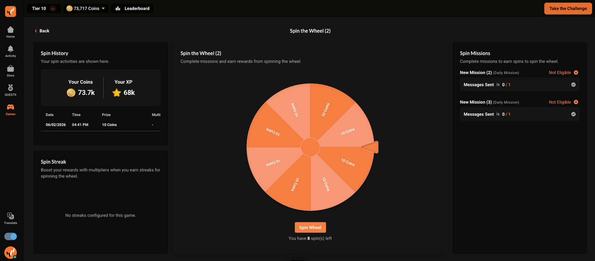
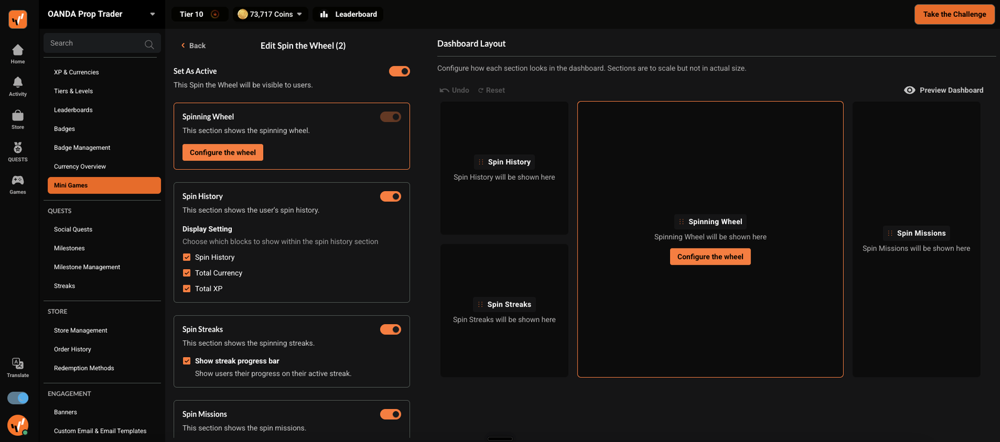
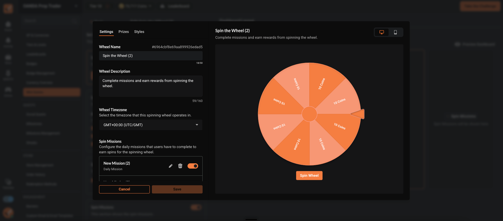
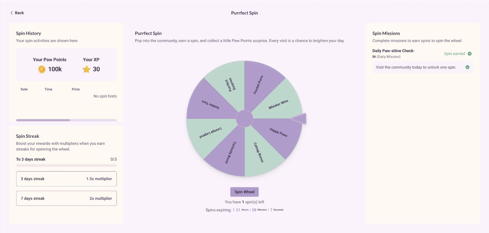
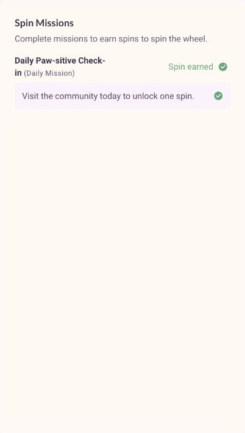
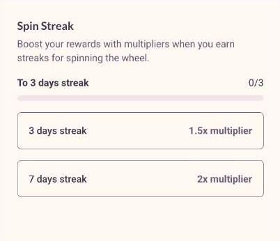
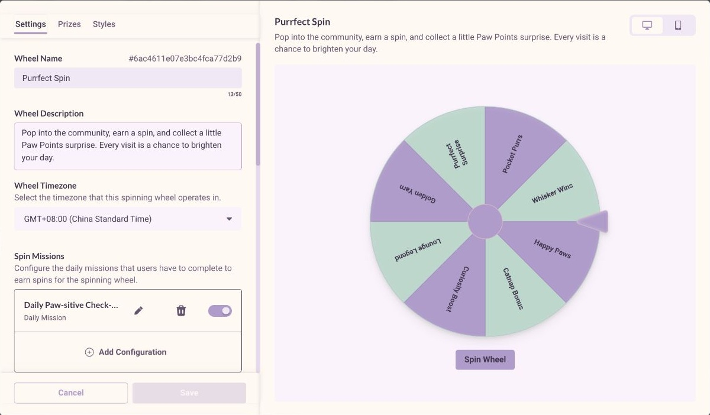
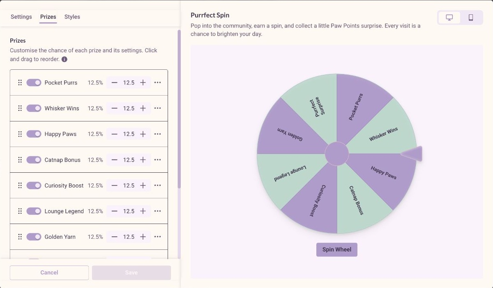

Mini Games / eligibility / feedback
A moment of delight.
A system behind it.
The wheel is the visible moment. Missions, available spins, prize configuration, streak multipliers and history make that moment understandable before and after it happens.

Feature and widget design evidence; source-backed walkthrough.
Original product captures + observed CatTrader widget
Complete mission → earn spin → play → inspect history
Feature flow
The wheel begins before the button is pressed.
- 01
Earn a spin
Configured missions explain which actions create a spin and whether the member is eligible.
- 02
Know what is available
Remaining and expiring spins make availability visible. Streaks can explain an applicable reward multiplier.
- 03
Spin and receive feedback
The play surface and result state connect a configured prize to a clear completion moment.
- 04
Review the result
Spin history retains the prize, multiplier, XP and currency context.
Explore the product logic
Delight works better when the state is clear.
This is a deterministic state replay, not a real spin or random prize draw. Move from unavailable to eligible to a recorded example result.
Complete a mission to earn a spin.
The action explains why the wheel is unavailable.
- Spins available
- 0
- History
- No local result
Local illustration · synthetic examples · no account, reward or configuration changes.
Configuration and experience
One playful surface, several independent decisions.


- Mission rules
- Spin missions define the qualifying action. Availability is distinct from the presentation of the wheel.
- Prize and appearance
- Configured prizes and wheel framing belong to the game; widget display controls choose what sections are shown.
- History and streaks
- History, missions, wheel and streak information are separate sections, rather than one all-or-nothing block.
Original wheel configuration in Figma ↗ · Member dashboard in Figma ↗
The working feature / staging evidence
More than the wheel: the rules around the action.
The working dashboard and administrator configuration make the relationship between earning, probability and repeat participation visible.





Evidence and limits
Read the artifacts at their actual strength.
Design intent and screen hierarchy.
The visible state at capture time.
Deterministic explanation of documented rules.
Source gaps and integration limits
No live spin or prize transaction was executed. Historical product screenshots and linked Figma intent are separate from current CatTrader evidence.
Feature walkthrough · updated 12 October 2026. Screens and source records are curated for explanation; no unverified adoption or business-impact claim is made.